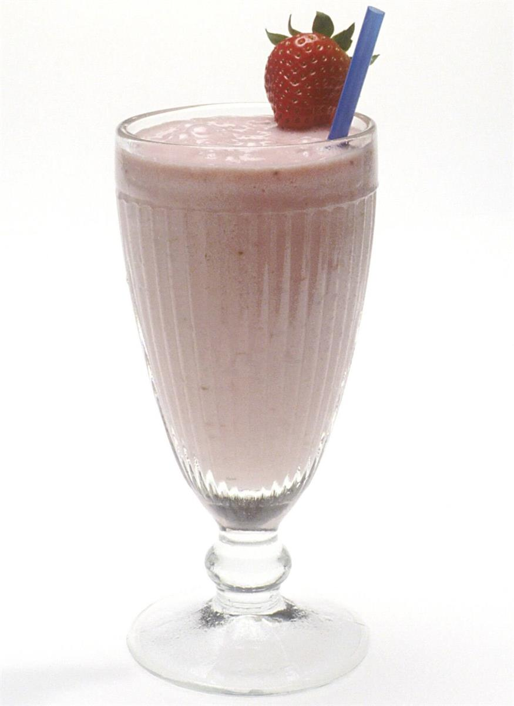
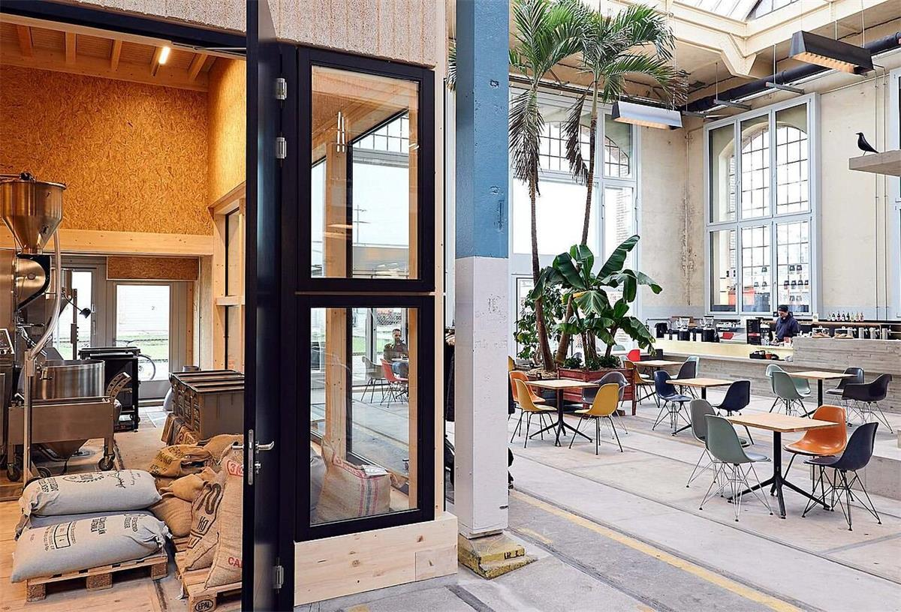
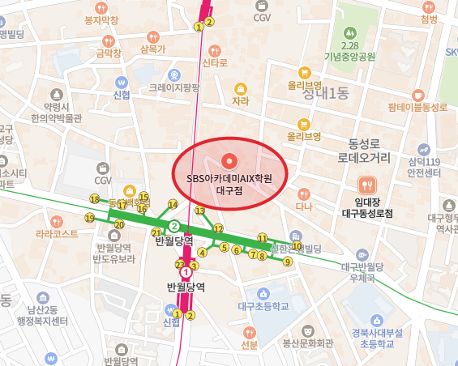

No.01

카페 라떼 Café Latte
1987년부터 지켜온 우유와 에스프레소의 비율. 첫 손님에게 내어드린 그 맛 그대로, 부드러운 거품 위에 라떼 아트를 그려 드립니다.
5,000원


Our Story
1987년 봄, 종로의 작은 골목에 MELLOW BEAN이 문을 열었습니다. 낡은 동주전자 하나와 손으로 볶은 원두, 그리고 천천히 기다리는 마음이 전부였지요.
세월이 흘러 거리의 풍경은 많이 바뀌었지만, 우리는 여전히 같은 자리에서 같은 방식으로 커피를 내립니다. 서두르지 않고, 한 잔 한 잔 정성껏.
Signature
1987년부터 지켜온 우유와 에스프레소의 비율. 첫 손님에게 내어드린 그 맛 그대로, 부드러운 거품 위에 라떼 아트를 그려 드립니다.
5,000원

에스프레소를 듬뿍 적신 옛날식 티라미수. 매일 아침 가게에서 직접 만들어 하루 스무 개만 준비합니다.
6,500원
Menu
주전자 하나로 천천히, 그날의 원두를 내립니다
6,500원
1987년부터 지켜온 우유와 에스프레소의 비율
5,000원
갓 구운 초코칩 쿠키를 곁들인 오후의 한 잔
7,500원

생딸기를 직접 갈아 넣은 계절 한정 메뉴
6,000원

상큼한 과일청에 탄산을 더한 시원한 한 잔
5,500원
에스프레소를 듬뿍 적신 옛날식 티라미수
6,500원
The Space

오래된 공장 건물을 고쳐 만든 높은 천장 아래, 한쪽에서는 매일 아침 원두를 볶고 다른 한쪽에서는 손님들이 느긋하게 하루를 보냅니다. 커다란 창으로 들어오는 햇살과 원두 볶는 향기, 그것이 MELLOW BEAN의 오래된 풍경입니다.
Visit Us
약도는 실제 축척과 다를 수 있습니다.
Subway
3호선 안국역 1번 출구에서 직진 300m, 도보 5분
Bus
'안국역' 정류장 하차 후 도보 3분
Parking
매장 전용 주차장이 없습니다. 인근 공영주차장을 이용해 주세요
Cafe Map
